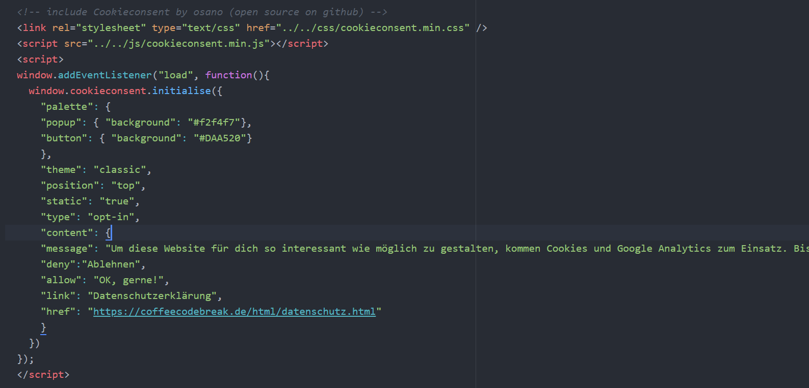
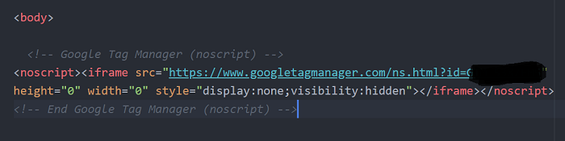
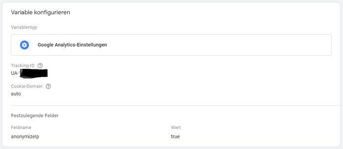
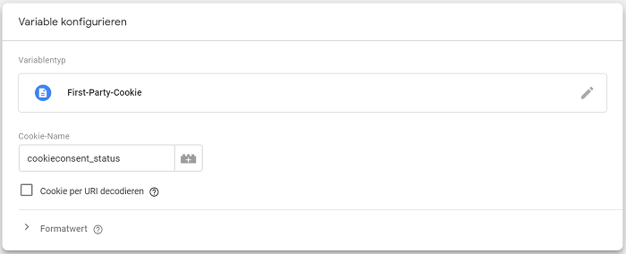
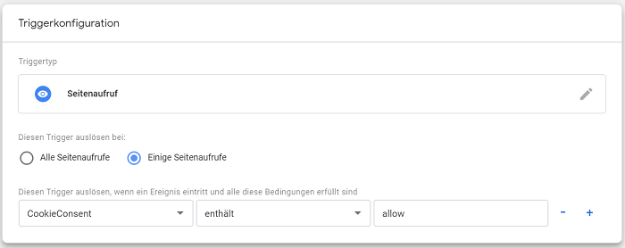

Why it is not done with Google Analytics
Google Analytics is a pretty powerful analysis tool from Google that allows you to track and analyze the traffic on your websites. I thought 'great, so I can see if my blog posts are read and which ones are more or less popular'. Therefore I decided to set up Google Analytics. And the setup itself is really no problem. There are more than enough good instructions and tutorials online.But unfortunately this is not enough. Without your consent, I can't evaluate what you've been doing on my website. Especially in Germany there is a lot to consider concerning data protection. And not only if you use Google Analytics, but generally if you run a website.
Since my site is brand new and did not even exist for search engines (and thus most likely for you) until a few days ago, I hadn't given much thought to these topics until now. But at some point everyone has to make sure to be on the safe side. And setting up Google Analytics was a (compelling) trigger for me to get started.
So I was facing two challenges: on the one hand, I had to find out what I actually needed and on the other hand, I had to find a technical solution for it. Of course I am not a lawyer and if you need detailed information, you should always consult an expert. This is definitely not an article about all the legal aspects you have to consider when running a website. There are far too many different cases and types of websites for that.
But what is sure: to evaluate your behaviour on my website with Google Analytics I need your permission. I need to get this permission when you open my website in your browser. This is done via a cookie banner. Of course I also have to give you the possibility to reject the tracking.
Naively, I had assumed that this was something that could be done in two hours. And especially concerning the technical side, I had expected - as for almost everything else - quick and easy solutions and enough tutorials. But in the end I had to tediously collect the individual pieces. Therefore I would like to share with you what was my solution to the problem in the end. This is certainly not the only solution, but one that worked out great for me. What exactly you need for your website depends on your situation.
Briefly about my situation: I programmed my site myself and did not use a content management system like WordPress or other templates. This is because I use my website for programming practice and to try out technologies. If you manage your website using WordPress etc., there are of course plugins that make the topic of cookies much easier. But in my case I had to find a solution for my raw code.
My Cookie-Plan
After countless articles, instructions and YouTube videos, I had finally created a plan:- Implement cookie banner
- Set up Google Analytics
- Set up Google Tag Manager (and integrate Google Analytics as a tag)
- Connect cookie banner with Google Tag Manager
- Test if it works
Let's get started! :)
1. Implement cookie banner
You probably know them - the cookie banners that are displayed on almost every website you visit.There are many different types of cookie banners. Some simply inform you that you agree to the use of cookies if you continue to stay on this site. This variant is not really fair and also not entirely legal - at least in Germany.
You must be able to decide for yourself whether you want to allow cookies or not. And the best way to do this is to ensure that the rejection of cookies is not hidden somewhere. It should be offered as an equivalent option to allowing cookies, so that you can actively decide whether or not to allow cookies. (And this without 'allow cookies' being pre-selected as it is the case with many pages). This option is called 'Opt-In'. Since the legal situation can change and, as I said, I am not a lawyer, always inform yourself about the current regulations.
For example, if you look at my cookie banner, it offers you the two options 'Decline' and 'Okay, sure!' right at first glance. You have to actively choose one of the two options. You can also access the banner again any time and change your decision. For this purpose I have placed a small light grey 'Cookie Options' button in the upper left corner above my logo. If you click on it, the banner will reappear.
A small digression: Cookies store data in your browser. For example, if you are in an online shop and add items to your shopping cart, cookies can be used to store the items. Cookies can also be used for tracking. For example, they can store information about how long you have been on which pages, which terms you have searched for, etc. Of course, this always triggers broad discussions on data protection and new judgements.
Since I didn't want to write all the cookie code myself, I looked for free solutions that I could integrate into my code. There are a few options - but most of them do not offer any visual configuration options for the cookie banner or only as a paid upgrade. Furthermore, the actual code is usually located on their servers, which is controversial from a data protection point of view.
After some searching I found a very popular open source solution which is based on Github: CookieConsent by Osano. On the Osano Website there is even a configurator for your cookie banner, which generates the desired code for you. This code you then insert into your HTML files. This way you do not have to play around with the CookieConsent code. (The configurator opens when you click on 'Start Coding'.) Select the 'Ask users to opt INTO cookies' option under 'Compliance Type' to create an opt-in banner.
The CookieContent code can be integrated into your own code in a number of ways, as described on Github. The Osano configurator offers you a CSS link under 'Copy the Code', which you can include in the head of your HTML files. Since I wanted the code to be with my other files, I copied the required JavaScript and CSS code and put it as separate files in my folder structure. Here you can find the min.js and the min.css code.
Instead of using the CSS link from Osano you have to specify the folder path to the files. Together with the rest of the code from the configurator, the whole thing looks like this in my case (I put everything I need for my cookie banner in one piece in the head of my HTML files)

By the way: in the min.css file you will find the styling for the revoke-button (the class is called 'cc-revoke'). This is the light-gray button above my logo in the upper left corner. You can use it to reopen the cookie banner. If you know a little bit about CSS, you can customize it in min.css.
2. Set up Google Analytics
After I had finally managed to integrate a cookie banner into my website, I had to make sure that it would work. The whole bunch of work had begun with the fact that I wanted to use Google Analytics. So the next step was to set up Google Analytics.As I mentioned above, this is quite simple. Roughly speaking: you go to analytics.google.com, log in via your Google account (or create a new one if you don't have one yet), create an analytics account and a new 'property' for your website. There are really great YouTube tutorials with lots of useful tips and hints.
Google Analytics offers you a tracking code that you can embed in your HTML files. An important hint: if you do so, you have to do an IP-anonymization by including an anonymizeIp in the code! There are also many instructions for this.
If you use the Google Tag Manager, you do not need to use the tracking code directly. Since I didn't want to include the tracking code from Google Analytics in my code, but use the Tag Manager instead, I was done with creating my website as a property here for now.
3. Set up Google Tag Manager
Now I had a cookie banner and my website as a property in Google Analytics. But this alone wouldn't help me much to activate Google Analytics based on the decision of my visitors. So I had to somehow manage to tell Google Analytics to get started or not. Depending on whether you clicked 'Reject' or 'Okay, sure!' on my cookie banner.During my research I found out that the Google Tag Manager offers a quite comfortable solution for this. The Google Tag Manager is a kind of 'mediator'. It can control for my website whether certain tags, such as Google Analytics, should be activated or not. That sounded quite reasonable to me. Therefore I set up the Google Tag Manager in the next step. Again, you can find really good material for this online.
All in all I created an account with a container for my website and put my Google Analytics tag into this container. Don't forget to put the code that the Google Tag Manager generates for your container into the body of your HTML files. This is how you connect the Tag Manager to your website.

Since I didn't use the Google Analytics tracking code to make the anonymization of your IP address, I had to do this here. To do this, you create a variable in the Tag Manager for which you enter the tracking ID of the website (you can find it at Google Analytics). Then you choose 'anonymizeIp' as a field name and set the value to 'true'. Should look something like this:

This means that when Google Analytics tracks what you did on my website, the last eight digits of your IP address are encrypted. So it is no longer possible to track which computer exactly was on my site and that's absolutely fine. In my Google Analytics dashboard I can see for example that yesterday five people (or more precisely devices) from the Munich area were on my website and which blog posts they had opened for how long.
Now I was almost there. The only thing missing was the connection between my cookie banner and the Google Tag Manager. And how I made this, I will explain in the next section.
4. Connect cookie banner with Google Tag Manager
If you click on 'Reject' or 'Okay, sure!' in my cookie banner, the CookieConsent code snippet that checks how you decided ('cookieconsent_status') will set the status to allow or deny. And exactly this information is needed by my Google Tag Manager to tell Google Analytics that it may or may not start.In order for the Google Tag Manager to receive and process the necessary information, I have created a variable of the type First-Party-Cookie for my CoffeeCodeBreak container and stored the name of the 'verification code snippet' (i.e. 'cookieconsent_status') in it.

To make sure that my Google Tag Manager only allows tracking if the status is 'allow', I created a trigger in the Tag Manager. I gave this trigger the type 'page view' and specified that Google Analytics may only be triggered if my CookieContent variable contains the value 'allow'. Here is a picture of the configuration:

And that was it! If you go to my site now and click 'Reject' in my cookie banner, my Google Tag Manager will receive the information that Google Analytics must not be activated. If you click 'Okay, sure!', the tag manager will receive the information that you allow tracking and Google Analytics will be started.
And that in turn helps me to see which items were clicked on how often, how much time was spent on each item, etc. This means I can write more articles that might be interesting for you and less that you might not like so much. And of course I'm really happy when I see that someone has visited my website! :)
5. Test if it works
To make sure that my settings work, I tested the whole thing. The Google Tag Manager offers a preview option. If you open your page in preview mode, you can see directly which tags are active and which are not. I alternately rejected and re-enabled my cookies and clicked around on the page to check if Google Analytics was active or inactive whenever I wanted it to be. And fortunately this worked perfectly well! :)Maybe you are in a similar situation and I could help you a little bit with this post. And if not, I hope that you - even if it was quite specific and not easy this time - understood the most important things and learned something new!
See you soon!
Caro
Leave a comment
Feel free to leave me a comment. Your e-mail address will not be published. The fields marked with a * have to be filled out to send the comment. It may take a few hours until your comment is published.